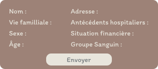

Projet Ouroboros
Vous avez trouvé un téléphone perdu.
Vous l'avez mis à charger chez vous, et vous l'avez oublié durant une semaine.
Il est temps pour vous de retrouver le propriétaire de ce téléphone.
Pour une meilleure expérience, mettez le jeu en plein écran (F11 / F14)
Cliquez pour commencer
Merci de mettre le jeu en plein écran
Texte du dialogue

Messages
Maman
Appelle moi dès que tu as lu mes mes...
Papa
Tu es injoignable, réponds à ta mère...
Greg
Facile, mec, pense à la date la plus...
Mot de passe oublié ?
Messagerie
Marc Lamoine
Salut, comme prévu voici l'adr...
Victor Bourdon
Vous : Oui monsieur.
Marc Lamoine
28 Août 2012
Marc LemoineEst-ce que tu as pu avancer dans le rapport?
SimonOui, je devrais pouvoir te déposer ça bientôt.
02 Septembre 2012
Marc LemoineSalut Simon, je sais que Victor peut être dur, surtout avec toi. Si tu as besoin d'en parler, tu peux venir me voir.
SimonHaha non t'inquiète, ça fait parti du travail. Je pense qu'il ne va pas tarder à me licencier...
Marc LemoineMais non, ça devrait bien se passer. Je vais essayer de discuter avec Victor pour voir s'il n'y aurait pas moyen de voir ça ensemble.
10 Septembre 2012
Marc LemoineSalut, comme je n'arrive pas à te joindre par téléphone, je t'écris pour savoir si tu serais disponible ce lundi 16?
SimonPourquoi? Peut-être, je ne sais pas encore.
Marc LemoineOn prévoit d'aller au restaurant avec les autres équipes, pour te dire au revoir. Préviens-moi si tu as un empêchement. Je t'enverrai bientôt l'adresse ! Ce serait vraiment génial qu'on puisse se voir avant que tu ne partes.
12 Septembre 2012
Marc LemoineSalut, comme prévu voici l'adresse : 366 Saint-jerome Ave. On prévoit de se rejoindre vers 17h. Préviens-moi si tu as un empêchement!
17 Septembre 2012
Marc LemoineSalut ! Tu n'es pas venu hier, est-ce que tout va bien ?
Victor Bourdon
16 Août 2012
Victor BourdonTes rapports sont bourrés de fautes. Refais. 22h dernier délai.
SimonVous retrouverez les rapports corrigés dans le serveur.
18 Août 2012
Victor BourdonQu'est-ce que tu ne comprends pas quand je te demande de supprimer les sources?
SimonJe rectifie ça tout de suite.
20 Août 2012
Victor BourdonLe diaporama que tu as fait n'est pas assez professionnel, retravaille ça avant la réunion.
SimonOui, je vous fais ça.
23 Août 2012
Victor BourdonAjoute les images que Marie a prises. Pas celles de Jacques.
SimonOui monsieur. Je vous fais ça tout de suite.
25 Août 2012
Victor BourdonLes polices ne sont pas superbes, choisis-en d'autres.
SimonOui monsieur, je fais ça.
29 Août 2012
Victor BourdonTon tableur est mal organisé. Les formules sont mauvaises. Corrige ça pour lundi.
SimonOui d'accord monsieur, je corrige ça tout de suite.
01 Septembre 2012
Victor BourdonViens me voir au bureau le 3 SEPTEMBRE 19h.
SimonOui monsieur.
Récupération de mot de passe
Ouroboros
Récapitualtif du formulaire de...
Dentiste
Rendez-vous manqué, jeudi 5 sep...
Dentiste
Accusé de prise de rendez-vous pour le...
Ouroboros
Bienvenue, merci de vous être inscrit...
Calculatrice
C@lcUl@tIC€
Journal
24 août 2012
Je viens de télécharger cette application étrange… c'est censé être une calculette, mais en vérité, ça peut être un journal, une messagerie, une galerie photo secrète. Original comme concept. Je ne sais pas trop pourquoi je l'ai gardée. Peut-être que j'ai besoin de poser certaines choses quelque part, même si c'est juste sur un écran. Greg aurait sûrement adoré écouter mes histoires, mais honnêtement, il me fatigue avec ses délires sur les Illuminati et les Reptiliens. J'ai besoin de mettre de l'ordre dans ma tête sans qu'il m'inonde de ses théories.
3 septembre 2012
Aujourd'hui, c'était le grand jour... enfin, façon de parler. Rendez-vous avec mon patron. Je savais que ça sentait mauvais depuis un moment, mais je ne pensais pas qu'il serait capable de me virer aussi froidement. « Nous n'avons plus besoin de vous, Simon. » Ces mots résonnent encore dans ma tête. Comment est-ce qu'on peut se débarrasser d'une personne comme ça, sans aucune considération ?
C'est fou comme la vie peut basculer en un instant. J'ai envoyé des CV, bien sûr, mais rien de concret pour l'instant. J'ai tenté de demander de l'aide à mes parents… mauvaise idée. Ils refusent toujours de m'avancer de l'argent. « Tu ne rembourses jamais, Simon. » Ouais, je sais, mais là c'était différent… Enfin, bref, je suis seul dans cette galère.
5 septembre 2012
Je n'ai même pas été à mon rendez-vous chez le dentiste aujourd'hui. À quoi bon ? Si ni Greg ni mes parents ne veulent m'aider pour ce mois-ci, je vais devoir annuler tous mes trucs inutiles. Ça me fera au moins économiser un peu, histoire que je ne perde pas mon appartement. J'ai appelé le dentiste pour annuler. Pas de nouvelle prise de rendez-vous pour l'instant… peut-être dans une autre vie.
6 septembre 2012
Greg n'arrête pas de m'appeler pour discuter de ce Projet Ouroboros dont je lui ai parlé. Je pensais qu'il serait content pour moi, que ça allait le rassurer, mais non. Il ne fait que me dire que c'est louche, que c'est un piège. Franchement, je suis à bout avec lui. J'ai besoin de cet argent. Deux mois de salaire, rien que pour remplir un formulaire et me pointer à un rendez-vous ? Comment est-ce que ça peut mal se passer ? Greg, lui, imagine des trucs de fous. Mais ça va me permettre de respirer, et c'est tout ce qui compte pour moi en ce moment.
8 septembre 2012
Plus que cinq jours avant le rendez-vous avec le Projet Ouroboros, et j'ai hâte. C'est un peu comme si ce jour-là allait tout changer pour moi. Je pourrai enfin me remettre sur pied, peut-être même partir un peu pour prendre du recul sur tout ça.
Greg, par contre, devient insupportable. Il continue à me dire que c'est une arnaque, que je vais me faire avoir. Il a même essayé de m'envoyer des articles qu'il a trouvés sur internet, comme quoi c'est lié à des trucs bizarres. Franchement, il me fatigue avec ses théories. Je ne comprends pas pourquoi il ne peut pas juste être content pour moi. Il parle même de « machinations », de trucs à la Reptiliens, encore une fois…
Mais bref, je ne vais pas me laisser influencer. Ce projet est ma bouée de sauvetage, et vendredi prochain, tout va changer.
9 septembre 2012
C'est fou comme le temps passe lentement quand on attend quelque chose. Je n'ai rien à faire de mes journées depuis que je suis au chômage, alors je pense beaucoup à ce rendez-vous. Greg m'a encore appelé aujourd'hui pour me dire qu'il a trouvé des « informations suspectes » sur le Projet Ouroboros. Il m'a demandé de repousser mon rendez-vous pour qu'il puisse m'en parler… comme si j'allais le faire. Je suis déjà inscrit, j'ai déjà tout envoyé. Il est hors de question que je laisse cette opportunité me filer entre les doigts.
En tout cas, le rendez-vous de vendredi est mon seul horizon en ce moment. J'espère que ça se passera bien. Greg veut m'accompagner, mais je refuse. Il va tout gâcher avec ses suspicions paranoïaques.
11 septembre 2012
Marc a pris l'initiative d'organiser un dîner d'adieu avec quelques collègues pour lundi prochain. Ça fait plaisir qu'il soit aussi bienveillant. Marc est probablement la seule personne du boulot que je respecte vraiment. Il a cette capacité à rester positif, quoi qu'il arrive. Il m'a même invité au resto la semaine dernière pour me changer les idées après le licenciement. Franchement, sans lui, je ne sais pas comment j'aurais tenu.
12 septembre 2012
Demain, c'est le grand jour. J'ai hâte, mais en même temps, je sens une légère appréhension qui monte. Greg me met la pression avec ses histoires… Il me répète que c'est une arnaque, que je vais regretter, mais il ne comprend pas. J'ai besoin de cet argent, et je ne vais pas reculer maintenant. J'ai déjà tout préparé, mes papiers sont prêts, il ne reste plus qu'à me pointer là-bas. Demain soir, je l'inviterai au bar pour fêter ça. Peut-être qu'il finira par se réjouir pour moi.
13 septembre 2012
Première fois que j'écris le matin Youhou ! J'ai pas dormi de la nuit. C'est aujourd'hui ! Le grand jour est arrivé. Greg m'a encore appelé ce matin pour essayer de me dissuader, mais je n'ai même pas pris la peine de répondre. Il faut qu'il arrête avec ses théories. Ce rendez-vous va marquer un tournant dans ma vie. Deux mois de salaire, juste pour un entretien… C'est plus que j'en ai jamais eu d'un coup.
J'y vais seul, évidemment. Je ne veux pas que Greg vienne tout gâcher avec son attitude négative. Il m'a même sorti un truc bizarre sur le fait que le rendez-vous soit un vendredi 13… franchement, il devient parano. Moi, je suis prêt. Ça va bien se passer.
Ce soir, ce sera ma tournée. Je ne peux pas attendre de voir la tête de Greg quand je lui dirai que tout est réglé.
Greg
3 Septembre 2012
MoiEh Greg tu veux savoir quoi ? Mon patron vient juste de me licencier.
GregNon attends, sérieusement ?
MoiOuais, et vu que c'est le début du mois j'aurais pas ma paie. Je suis vraiment dans le pétrin, tu peux m'aider un peu ?
MoiGreg ?
4 Septembre 2012
GregPardon, j'avais des truc à faire... et pour l'aide c'est non ! T'sais très bien que j'suis pas mieux placé que toi, ça fait déjà plus d'un mois que j'me fais plus exploiter par ce que t'appelles un "patron"!
MoiTu exagères toujours...
GregC'est juste la réalité Simon, la société profite de nous et personne dit rien !
MoiÉcoute, tu sais très bien que moi, je ne crois pas en ces choses là.
GregTu devrais ! J'ai plein de preuves de tout ce que j'avance.
MoiLaisse tomber. Bon, si ni toi ni mes parents veulent m'aider pour ce mois ci je vais juste annuler mon rendez-vous chez le dentiste. Histoire que je tienne au moins jusqu'à la fin du mois sans perdre mon appartement.
5 Septembre 2012
MoiBon, j'ai annulé mon rendez-vous au dentiste du coup.
GregPas grave, j'suis sûr que tes dents peuvent tenir un mois de plus haha.
MoiTrès drôle, merci Greg.
GregAucun soucis, mon pote !
6 Septembre 2012
MoiGreg, j'ai tellement de chance t'as pas idée !
GregDe t'être fait viré ? T'ouvres enfin les yeux sur l'esclavagisme passif ?
MoiNon rien à voir, écoute je cherchais des offres d'emploi pour octobre et devine sur quoi je suis tombé !
GregUne offre d'emploi où t'es payé à plus de 2% au dessus du smic ... ?
MoiNon ! Le salaire de deux mois réunis en une seule journée ! Faut juste remplir un formulaire, tu l'envoies et tu reçois l'argent une semaine après pendant un entretien sur place.
GregÇa me parait louche ton truc. Tu vas encore te faire arnaquer.
MoiNon c'est du vrai promis ! Tu veux que je t'envoie une photo du formulaire ?
GregVas-y
Moi
GregTu te fous de moi c'est quoi ce formulaire ? Ça demande des informations méga bizarres, et c'est pour quoi d'abord ? "Projet Ouroboros" ?
MoiOn s'en fiche, juste remplis-le et après tu reçois une belle paie sans rien faire!
GregHors de question, j'y toucherais pas et toi non plus.
MoiTrop tard, j'ai déjà envoyé le mien !
GregMais tu réfléchis pas, c'est incroyable !
MoiD'après mes calculs très trèèèèèès poussés, recevoir 2 mois de salaires en 1 semaine, c'est une bonne chose.
GregImagine c'est un complot visant à attirer des gens contre de l'argent ?
MoiGreg, t'es un super ami mais un très mauvais soutien. Tu devrais être content pour moi.
GregTu veux vraiment que je préconise ce genre d'escroquerie, voir ce genre de MACHINATIONS ??
9 Septembre 2012
GregEh !
GregSimon ?
MoiQuoi ?
GregFaut qu'on en parle là. Ton projet Ouro-machin.
MoiLaisse tomber j'ai pas envie.
GregMais ? Et si c'est dangereux, et si jamais ta crédulité te perdrait ?
MoiGreg, stop. Je suis sûr que les sites de conspirations irréalistes sur lesquels tu traines sont bien plus dangereux qu'un simple entretien.
MoiDe toute façon, j'ai déjà la date de mon rendez-vous. Vendredi 13 Septembre.
GregVendredi 13 ??? C'EST UN SIGNE ! Et je suis plus malin que toi, j'tombe pas dans des arnaques en ligne moi.
MoiPardon ?!
GregLaisse-moi au moins t'accompagner alors.
MoiEt puis quoi encore ? Tu risques de tout mettre en l'air, si la personne de l'entretien te regarde de travers... je t'entends déjà crier "REPTILIENS".
GregÇa a été prouvé que 12% de notre entourage sont en fait des reptiliens, mais le gouvernement ne veut pas le révéler au public par peur qu'il y ait une panique générale.
MoiTu vas rester chez toi. Et moi j'irais à l'entretien.
12 Septembre 2012
MoiJ'ai trop hâte !!!
GregBah pas moi...
MoiRooh aller ! Demain soir au bar ce sera ma tournée et je t'invite !
GregJ'ai réussi à trouver pleins d'informations suspectes sur les mots clés "Projet Ouroboros". Je suis en train de les réunir, si tu me laisses une semaine ou deux j'pourrais même te les montrer !
MoiGreg...
GregAller ! Tu peux reporter ton rendez-vous non ?
Moi...
13 Septembre 2012
GregAlors comment ça s'est passé ?
GregMec j'ai déterré des infos confidentielles !
GregLa tournée de ce soir tient toujours ? J'peux te montrer mon avancée !
GregSimon ?
15 Septembre 2012
GregAllo ...?
17 Septembre 2012
GregHey, j'ai croisé Marc aujourd'hui et il m'a dit que t'étais pas venu au restaurant hier.
25 Septembre 2012
GregOh ! Tu me fais la moue ou quoi ?
27 Septembre 2012
GregTu es connecté pas trop tôt !
GregPourquoi cette absence ? Je suis désolé si je t'ai froissé..
GregJ'suis content que tu sois là, j'ai découvert que Ouroboros avait un lien avec le gouvernement, dans mon groupe, plusieurs rumeurs se sont propagées !
GregIls essaient de faire des soldats éternelles ! Quelle horreur, tu ne trouves pas ? Sinon, comment se fait-il que tu es disparu pendant si longtemps ? Tu me caches rien hein ?
Mails
Vous avez reçu un nouveau mail
Messages Privés
Vous avez reçu un nouveau message
Indice trouve
Un nouvel indice sur la disparition de Simon a été trouvé
Nouveau lieu
Vous pouvez dès à présent vous rendre sur le lieu de travail de Simon.
Félicitations
Vous avez beaucoup cherché ! Vous avez la possibilité de finir cette enquête.
Suite à votre enquête vous avez pu trouvé les indices suivants :
Siméon a disparu.
Siméon a été viré de son travail.
Il a de nombreux soucis d'argent, mais ni ses parents ni son ami ne peuvent l'aider.
Il n'est pas venu au restaurant, donc il a disparu avant cette date.
Il a donné de nombreuses informations personnelles à une aide nommé Ouroboros.
Son rendez-vous avec Ouroboros est bien mis en évidant, donc il y est forcément allé.
Greg vous apprend que Ouroboros est un projet secret du gouvernement pour faire des soldats
"éternels" d'où la présence de données médicales dans le formulaire.
Ils utiliseraient des personnes comme cobayes après les avoir enlevées sous couvert d'une promesse d'argent.
Effectivement, vous avez commencé à remarquer de plus en plus d'affiches de personnes disparues placardées dans les rues ces derniers temps. Cela pourrait avoir un lien...
Projet Ouroboros
Nous espérons que vous avez apprécié de jouer au jeu Ouroboros.
"Ouroboros" est un symbole ancien représentant un serpent se mangeant la queue.
Ce symbole peut signifier l'éternel cycle.
De Charline, Mélanie, Camille